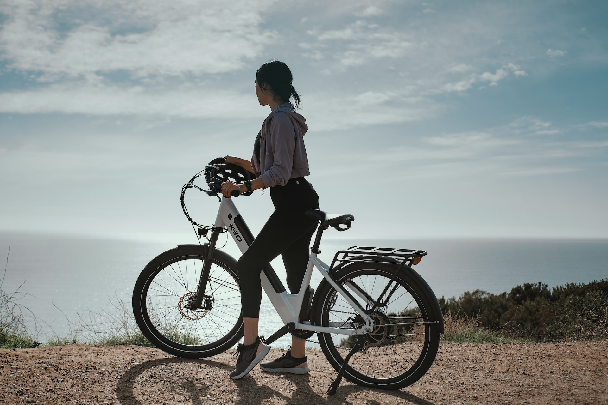

Cyclistic bike customer analysis for business marketing.
Cyclistic is an imaginary bike-sharing company that started out in 2016 and has grown its fleet to about 5,824 bicycles. Until now, Cyclistic's marketing strategy relied on building general awareness and appealing to broad consumer segments. One approach One approach that helped make these things possible was the flexibility of its pricing plans: single-ride passes, full-day passes, and annual memberships. Customers who pursue single-ride or full-day passes are referred to as casual riders. Customers who purchase annual memberships are called cyclistic members.
The Director of Marketing believes the company's future success depends on maximizing the number of annual memberships. Therefore, my team wants to understand how casual riders and annual members use cyclistic bikes differently and this will form the basis of this analysis and the results will be used to lead a marketing campaign aimed at converting casual riders into annual members.